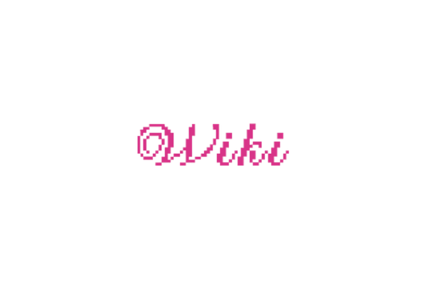

Open Source Fashion

In deze encyclopedie vind je de exacte betekenis van Open Source Fashion, hoe het werkt in de praktijk en waarom dit belangrijk is voor de toekomst van de modewereld.
Wat betekent open source? (kerndefinitie)
Open Source Fashion is een beweging waarin modeontwerpen, kennis en digitale patronen vrij toegankelijk zijn voor iedereen via het internet.
Hoe werkt het in de praktijk?
In de traditionele modewereld beschermen grote merken hun ontwerpen en patronen streng. Bij Open Source Fashion worden bestanden juist openbaar gedeeld via het web. Ontwerpers delen bijvoorbeeld 3D-kledingbestanden of digitale snijpatronen. Bezoekers en andere makers kunnen deze bestanden gratis downloaden, aanpassen en zelf fysiek maken of digitaal dragen.
Waarom is dit belangrijk?
Het probleem: Fysieke kleding maken en modeshows organiseren is extreem duur. Dit maakt de modewereld gesloten en heel moeilijk toegankelijk voor beginnende designers en modellen.
De oplossing:
- Direct bereik: Designers showen hun werk rechtstreeks aan een wereldwijd publiek via het web.
- Gelijkwaardigheid: Modellen en makers bouwen via sociale en digitale platformen hun eigen achterban op, zonder afhankelijk te zijn van traditionele poortwachters.
- Duurzaamheid: Kleding wordt eerst digitaal ontworpen en gepast voordat het geproduceerd wordt, wat textielverspilling tegengaat.
Meer weten?
Bekijk de pagina Bron voor de gebruikte bronnen of lees mijn Blog voor mijn persoonlijke ervaring als model en waarom dit onderwerp mij zo inspireert.